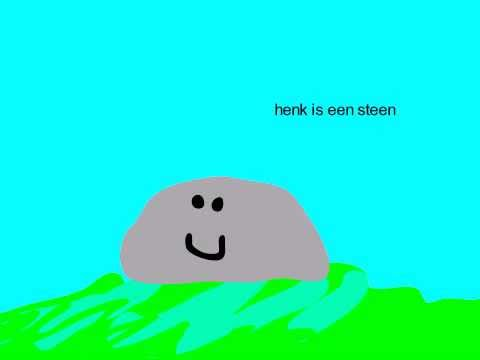

Jonas and Harold took together the train sunday evening because they had a lecture monday morning at 8AM. But Harold was very stuborn and did not want to go. So Jonas showed some mercy and changed the plans and they would reserve a room and start at 9AM.
When Jonas got there on time he noticed that his 'teammate' wasn't there. So he had to work alone in a room of the faculty philosophy. That faculty was dangurous because the danger was pried behind every corner.
When harold found the room it was to late. Jonas was already eaten alive. There was no sign anymore of the phylosophers. Only his head was still in tackt.
Harold felt the guilt hole his life and was never happy again.
